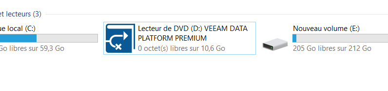

Installation
Tout d'abord, il faut commencer par télécharger le fichier iso sur le site web de veeam.
Il faut choisir le téléchargement de Veeam Data Platform.
Ensuite, on monte le fichier iso dans la machine et on double clique pour lancer l'installation.

Dans la première page, on choisit Veeam Backup & Replication.

Ensuite, on choisit Install Veeam Backup & Replication.

On accepte les termes de la licence.

On ne rentre pas de licence, on continue avec un compte gratuit.

La configuration de la machine est vérifiée.
On obtient alors un résumé des paramètres.

On peut alors lancer l'installation.

L'installation est enfin terminée.